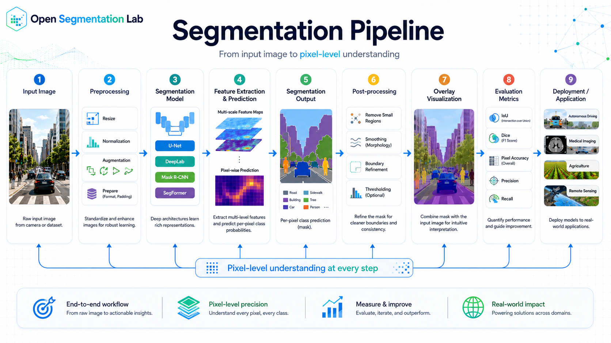
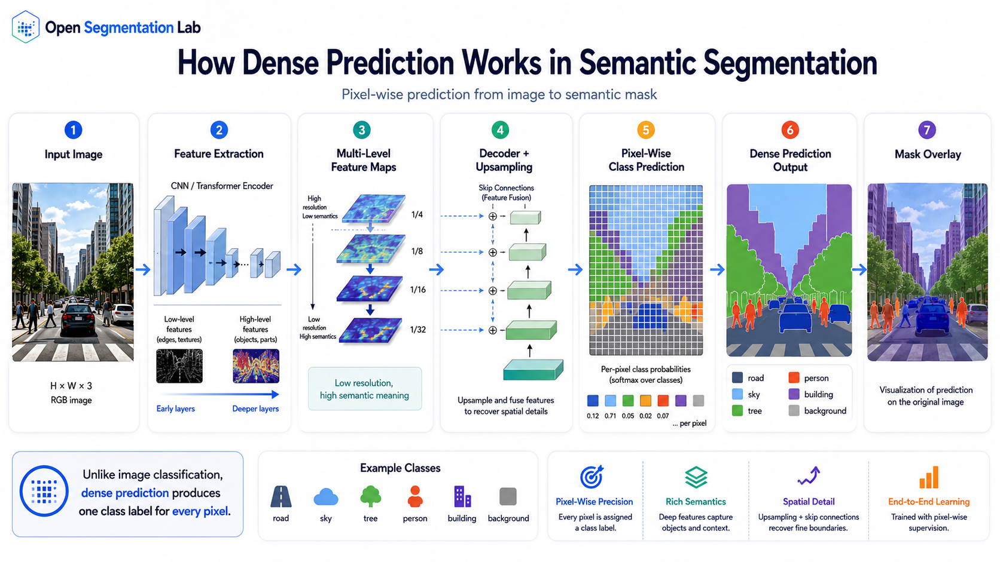
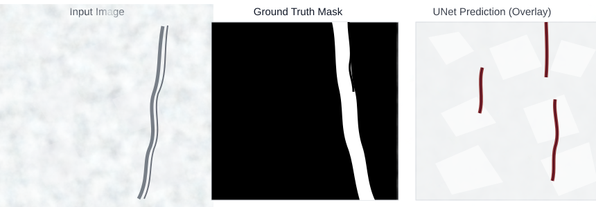

Semantic Segmentation Definition
Semantic segmentation is the computer vision task of assigning a semantic class label to every pixel in an image. If an image has height H, width W, and C target classes, a segmentation model usually predicts a score tensor with shape C x H x W. The final class map is obtained by choosing the highest-scoring class at each pixel.
How Dense Prediction Works
A semantic segmentation network keeps spatial structure throughout the model. The encoder extracts visual features, the decoder restores spatial resolution, and the classifier projects features into class logits. The model learns boundaries, textures, shapes, and context because the loss is computed at the pixel level.

Encoder
Extracts low-level edges, textures, high-level parts, and global context using CNN or transformer layers.
Decoder
Upsamples feature maps and combines coarse semantic context with fine spatial detail.
Classifier Head
Uses a small convolutional layer to convert feature channels into class logits for every pixel.
Loss and Metrics
Optimizes pixel-wise classification loss and evaluates overlap with mIoU, Dice, or pixel accuracy.
Important Model Families
FCN showed that classification networks could be converted into dense predictors. U-Net added an encoder-decoder structure with skip connections, making it especially strong for medical and agricultural imagery. DeepLab uses atrous convolution and multiscale context. Modern transformer-based models such as SegFormer and Mask2Former improve representation learning and support strong performance across complex scenes.
Applications
Medical Imaging
Segment organs, tumors, lesions, cells, vessels, or tissue regions for measurement and clinical research.
Agriculture
Separate crop, weed, soil, canopy, leaf disease, and plant stress regions for precision agriculture.
Autonomous Driving
Estimate road, lane, sidewalk, vegetation, vehicle, pedestrian, and traffic-scene regions.
Remote Sensing
Map buildings, roads, water, forest, and land-cover classes from aerial or satellite images.
PyTorch Tutorial Lab
This step-by-step lab walks through a complete semantic segmentation pipeline. Use the step buttons to progress from data loading through to evaluation, or jump to any step directly.
Step 1 — Dataset Loading & Preprocessing
A semantic segmentation dataset needs two items per sample: an RGB image and a mask where every pixel stores an integer class id. This step builds a Dataset, applies augmentation safely, and wraps everything in a DataLoader.
InterpolationMode.NEAREST — not bilinear. Bilinear interpolation would blend adjacent class ids and corrupt labels.
import os
from pathlib import Path
from PIL import Image
import numpy as np
import torch
from torch.utils.data import Dataset, DataLoader
from torchvision.transforms import v2 as T
from torchvision.transforms.v2 import InterpolationMode
class SemanticSegDataset(Dataset):
"""
Expects folder layout:
root/images/ *.png (RGB)
root/masks/ *.png (grayscale class-index, same filename)
"""
def __init__(self, root, split="train", image_size=(512, 512)):
self.image_dir = Path(root) / "images"
self.mask_dir = Path(root) / "masks"
self.paths = sorted(self.image_dir.glob("*.png"))
self.image_size = image_size
# ImageNet mean and std — use when loading pretrained backbones.
mean = [0.485, 0.456, 0.406]
std = [0.229, 0.224, 0.225]
if split == "train":
self.img_tf = T.Compose([
T.Resize(image_size, interpolation=InterpolationMode.BILINEAR),
T.RandomHorizontalFlip(p=0.5),
T.RandomVerticalFlip(p=0.3),
T.ColorJitter(brightness=0.3, contrast=0.3, saturation=0.2),
T.ToImage(),
T.ToDtype(torch.float32, scale=True),
T.Normalize(mean=mean, std=std),
])
# Masks only need geometric transforms — no color jitter, no normalization.
self.mask_tf = T.Compose([
T.Resize(image_size, interpolation=InterpolationMode.NEAREST),
T.RandomHorizontalFlip(p=0.5),
T.RandomVerticalFlip(p=0.3),
])
else:
self.img_tf = T.Compose([
T.Resize(image_size, interpolation=InterpolationMode.BILINEAR),
T.ToImage(),
T.ToDtype(torch.float32, scale=True),
T.Normalize(mean=mean, std=std),
])
self.mask_tf = T.Compose([
T.Resize(image_size, interpolation=InterpolationMode.NEAREST),
])
def __len__(self):
return len(self.paths)
def __getitem__(self, idx):
img_path = self.paths[idx]
mask_path = self.mask_dir / img_path.name
image = Image.open(img_path).convert("RGB")
mask = Image.open(mask_path) # single-channel, class ids
seed = torch.randint(0, 2**31, (1,)).item()
torch.manual_seed(seed)
image = self.img_tf(image)
torch.manual_seed(seed) # same seed keeps augmentations in sync
mask = self.mask_tf(mask)
mask = torch.as_tensor(np.array(mask), dtype=torch.long)
return image, mask # (3, H, W), (H, W)
train_ds = SemanticSegDataset("data/", split="train")
val_ds = SemanticSegDataset("data/", split="val")
train_loader = DataLoader(train_ds, batch_size=8, shuffle=True,
num_workers=4, pin_memory=True)
val_loader = DataLoader(val_ds, batch_size=8, shuffle=False,
num_workers=4, pin_memory=True)
# Sanity check
images, masks = next(iter(train_loader))
print("Image batch:", images.shape, images.dtype) # (8, 3, 512, 512) float32
print("Mask batch:", masks.shape, masks.dtype) # (8, 512, 512) int64- Image pixels are normalized to the ImageNet distribution when using pretrained backbones.
- Masks store integer class ids — never normalized float values.
- Geometric augmentations (flip, crop) use the same random seed for image and mask to stay in sync.
pin_memory=Truespeeds up CPU-to-GPU transfer on most systems.
Step 2 — Model Architecture
Choose an architecture based on dataset size, available GPU memory, and whether pretrained weights are accessible. Each model below highlights the critical setup details students most often get wrong.
U-Net — Encoder-Decoder with Skip Connections
U-Net is ideal when labeled data is limited and boundary precision matters. Skip connections transfer encoder feature maps directly to the decoder, helping it recover fine-grained spatial detail lost during pooling.
import torch
import torch.nn as nn
class DoubleConv(nn.Module):
def __init__(self, in_ch, out_ch):
super().__init__()
self.block = nn.Sequential(
nn.Conv2d(in_ch, out_ch, 3, padding=1, bias=False),
nn.BatchNorm2d(out_ch),
nn.ReLU(inplace=True),
nn.Conv2d(out_ch, out_ch, 3, padding=1, bias=False),
nn.BatchNorm2d(out_ch),
nn.ReLU(inplace=True),
)
def forward(self, x):
return self.block(x)
class UNet(nn.Module):
def __init__(self, num_classes, base_ch=64):
super().__init__()
# Encoder
self.enc1 = DoubleConv(3, base_ch)
self.enc2 = DoubleConv(base_ch, base_ch * 2)
self.enc3 = DoubleConv(base_ch * 2, base_ch * 4)
self.enc4 = DoubleConv(base_ch * 4, base_ch * 8)
self.pool = nn.MaxPool2d(2)
# Bottleneck
self.bottleneck = DoubleConv(base_ch * 8, base_ch * 16)
# Decoder — skip concat doubles channels before each DoubleConv
self.up4 = nn.ConvTranspose2d(base_ch * 16, base_ch * 8, 2, stride=2)
self.dec4 = DoubleConv(base_ch * 16, base_ch * 8)
self.up3 = nn.ConvTranspose2d(base_ch * 8, base_ch * 4, 2, stride=2)
self.dec3 = DoubleConv(base_ch * 8, base_ch * 4)
self.up2 = nn.ConvTranspose2d(base_ch * 4, base_ch * 2, 2, stride=2)
self.dec2 = DoubleConv(base_ch * 4, base_ch * 2)
self.up1 = nn.ConvTranspose2d(base_ch * 2, base_ch, 2, stride=2)
self.dec1 = DoubleConv(base_ch * 2, base_ch)
self.head = nn.Conv2d(base_ch, num_classes, 1)
def forward(self, x):
s1 = self.enc1(x)
s2 = self.enc2(self.pool(s1))
s3 = self.enc3(self.pool(s2))
s4 = self.enc4(self.pool(s3))
x = self.bottleneck(self.pool(s4))
x = self.dec4(torch.cat([self.up4(x), s4], dim=1))
x = self.dec3(torch.cat([self.up3(x), s3], dim=1))
x = self.dec2(torch.cat([self.up2(x), s2], dim=1))
x = self.dec1(torch.cat([self.up1(x), s1], dim=1))
return self.head(x) # (N, num_classes, H, W)
# Shape test
model = UNet(num_classes=4, base_ch=64)
x = torch.randn(2, 3, 512, 512)
print(model(x).shape) # torch.Size([2, 4, 512, 512])bias=False before every BatchNorm2d — the norm layer's own bias makes the conv bias redundant and wastes parameters.
DeepLabV3 — Atrous Convolution and ASPP
DeepLabV3 uses an Atrous Spatial Pyramid Pooling (ASPP) module to capture multi-scale context without reducing spatial resolution. Torchvision supplies pretrained variants with ResNet backbones.
import torch
from torchvision.models.segmentation import (
deeplabv3_resnet50,
DeepLabV3_ResNet50_Weights,
)
def build_deeplabv3(num_classes, pretrained=True):
weights = DeepLabV3_ResNet50_Weights.DEFAULT if pretrained else None
model = deeplabv3_resnet50(weights=weights)
# Replace classifier head for the target number of classes.
in_channels = model.classifier[4].in_channels
model.classifier[4] = torch.nn.Conv2d(in_channels, num_classes, 1)
# Replace auxiliary head too if present.
if model.aux_classifier is not None:
in_aux = model.aux_classifier[4].in_channels
model.aux_classifier[4] = torch.nn.Conv2d(in_aux, num_classes, 1)
return model
model = build_deeplabv3(num_classes=4, pretrained=True)
images = torch.randn(2, 3, 512, 512)
outputs = model(images)
logits = outputs["out"] # (N, C, H, W) — main semantic output
pred_masks = logits.argmax(dim=1)
print(logits.shape) # torch.Size([2, 4, 512, 512])"out" key holds main logits. The "aux" key holds auxiliary loss logits from a mid-network branch — useful to add an auxiliary loss during training.
SegFormer — Hierarchical Transformer Encoder
SegFormer uses a Mix Transformer encoder (MiT) with a lightweight all-MLP decoder. Six sizes are available (B0–B5). Larger variants produce stronger features but require more GPU memory.
import torch
import torch.nn.functional as F
from transformers import SegformerForSemanticSegmentation
def build_segformer(num_classes, pretrained_name="nvidia/mit-b2"):
model = SegformerForSemanticSegmentation.from_pretrained(
pretrained_name,
num_labels=num_classes,
ignore_mismatched_sizes=True, # replaces pretrained head
)
return model
model = build_segformer(num_classes=4)
model.eval()
images = torch.randn(2, 3, 512, 512)
with torch.no_grad():
outputs = model(pixel_values=images)
# SegFormer outputs logits at 1/4 input resolution — upsample before argmax.
logits = F.interpolate(
outputs.logits,
size=images.shape[-2:], # target: original H x W
mode="bilinear",
align_corners=False,
)
pred_masks = logits.argmax(dim=1)
print(pred_masks.shape) # torch.Size([2, 512, 512])Mask2Former — Universal Mask Classification
Mask2Former predicts a set of binary masks and class scores rather than a per-pixel label map. Post-processing by the image processor converts these query predictions into a semantic map. The same architecture supports semantic, instance, and panoptic tasks.
from PIL import Image
import torch
from transformers import (
Mask2FormerImageProcessor,
Mask2FormerForUniversalSegmentation,
)
processor = Mask2FormerImageProcessor.from_pretrained(
"facebook/mask2former-swin-small-ade-semantic"
)
model = Mask2FormerForUniversalSegmentation.from_pretrained(
"facebook/mask2former-swin-small-ade-semantic"
)
model.eval()
image = Image.open("image.jpg").convert("RGB")
inputs = processor(images=image, return_tensors="pt")
with torch.no_grad():
outputs = model(**inputs)
# Convert mask queries to a per-pixel semantic map.
semantic_maps = processor.post_process_semantic_segmentation(
outputs,
target_sizes=[image.size[::-1]], # (height, width)
)
seg_map = semantic_maps[0] # integer tensor (H, W)
print(seg_map.shape, seg_map.unique())post_process_semantic_segmentation — the raw model output is a set of mask queries, not a label map.
Architecture Comparison
Use this table to pick the right starting point for a given hardware or data constraint.
| Model | Type | Library | GPU Memory | Best for |
|---|---|---|---|---|
| U-Net (base_ch=64) | CNN | PyTorch only | Low (~3 GB) | Small labeled datasets, medical or agricultural tasks where boundary precision matters |
| DeepLabV3-ResNet50 | CNN | Torchvision | Medium (~5 GB) | Natural images when a pretrained ImageNet backbone is available |
| SegFormer-B2 | Transformer | HuggingFace | Medium (~6 GB) | Strong general-purpose baseline with transformer features |
| Mask2Former-Swin-S | Transformer | HuggingFace | High (~10 GB) | Multi-task output (semantic + instance + panoptic) or SOTA benchmarks |
Step 3 — Training Loop
This loop works with U-Net or DeepLabV3. If you use SegFormer, upsample logits to the mask size before passing them to the loss. The loop includes gradient clipping, polynomial learning rate scheduling, mIoU tracking, and checkpoint saving.
ignore_index=255 to CrossEntropyLoss excludes those pixels from the loss computation entirely.
import torch
import torch.nn as nn
from torch.optim import AdamW
from torch.optim.lr_scheduler import PolynomialLR
NUM_CLASSES = 4
EPOCHS = 50
DEVICE = "cuda" if torch.cuda.is_available() else "cpu"
model = UNet(num_classes=NUM_CLASSES).to(DEVICE)
criterion = nn.CrossEntropyLoss(ignore_index=255)
optimizer = AdamW(model.parameters(), lr=6e-4, weight_decay=1e-2)
scheduler = PolynomialLR(optimizer, total_iters=EPOCHS, power=0.9)
def mean_iou(logits, masks, num_classes, ignore_index=255):
"""Compute mean IoU over classes present in this batch."""
preds = logits.argmax(dim=1)
ious = []
for cls in range(num_classes):
valid = masks != ignore_index
p = (preds == cls) & valid
g = (masks == cls) & valid
inter = (p & g).sum().float()
union = (p | g).sum().float()
if union > 0:
ious.append(inter / union)
return torch.stack(ious).mean() if ious else torch.tensor(0.0)
best_miou = 0.0
for epoch in range(EPOCHS):
# --- Training phase ---
model.train()
train_loss = 0.0
for images, masks in train_loader:
images, masks = images.to(DEVICE), masks.to(DEVICE)
logits = model(images)
loss = criterion(logits, masks)
optimizer.zero_grad()
loss.backward()
torch.nn.utils.clip_grad_norm_(model.parameters(), max_norm=1.0)
optimizer.step()
train_loss += loss.item()
scheduler.step()
# --- Validation phase ---
model.eval()
val_ious = []
with torch.no_grad():
for images, masks in val_loader:
images, masks = images.to(DEVICE), masks.to(DEVICE)
val_ious.append(mean_iou(model(images), masks, NUM_CLASSES))
miou = torch.stack(val_ious).mean().item()
lr = scheduler.get_last_lr()[0]
print(f"Epoch {epoch+1:03d}/{EPOCHS} | loss {train_loss/len(train_loader):.4f} "
f"| mIoU {miou:.4f} | lr {lr:.2e}")
if miou > best_miou:
best_miou = miou
torch.save({"epoch": epoch, "model": model.state_dict(),
"miou": miou}, "best_model.pth")- Pass raw logits directly to
CrossEntropyLoss— do not apply softmax first. - Set
ignore_index=255to skip void and boundary pixels during loss computation. - Gradient clipping (
clip_grad_norm_) prevents exploding gradients, especially with transformer backbones. PolynomialLRdecays the learning rate smoothly — useful for segmentation tasks that benefit from a slow final learning rate.- Save
model.state_dict(), not the full model object, for portable checkpoints.
Step 4 — Evaluation & Testing
After training, load the best checkpoint and evaluate on the held-out test set. The confusion matrix below computes per-class IoU, mIoU, Dice, and pixel accuracy in one pass without holding all predictions in memory at once.
import torch
import numpy as np
from PIL import Image
from torchvision.transforms import v2 as T
from torchvision.transforms.v2 import InterpolationMode
DEVICE = "cuda" if torch.cuda.is_available() else "cpu"
NUM_CLASSES = 4
checkpoint = torch.load("best_model.pth", map_location=DEVICE)
model = UNet(num_classes=NUM_CLASSES).to(DEVICE)
model.load_state_dict(checkpoint["model"])
model.eval()
print(f"Loaded checkpoint: epoch {checkpoint['epoch']}, mIoU {checkpoint['miou']:.4f}")
def predict_mask(model, image_path, image_size=(512, 512)):
"""Run inference on a single image and return the predicted class mask."""
mean, std = [0.485, 0.456, 0.406], [0.229, 0.224, 0.225]
tf = T.Compose([
T.Resize(image_size, interpolation=InterpolationMode.BILINEAR),
T.ToImage(),
T.ToDtype(torch.float32, scale=True),
T.Normalize(mean=mean, std=std),
])
image = Image.open(image_path).convert("RGB")
tensor = tf(image).unsqueeze(0).to(DEVICE) # (1, 3, H, W)
with torch.no_grad():
logits = model(tensor)
return logits.argmax(dim=1).squeeze(0).cpu() # (H, W)
# Full test-set evaluation using a confusion matrix
conf_matrix = np.zeros((NUM_CLASSES, NUM_CLASSES), dtype=np.int64)
with torch.no_grad():
for images, masks in val_loader:
images = images.to(DEVICE)
preds = model(images).argmax(dim=1).cpu().numpy()
gt = masks.numpy()
valid = gt != 255
np.add.at(conf_matrix, (gt[valid], preds[valid]), 1)
# Per-class IoU
per_class_iou = []
for cls in range(NUM_CLASSES):
tp = conf_matrix[cls, cls]
fp = conf_matrix[:, cls].sum() - tp
fn = conf_matrix[cls, :].sum() - tp
denom = tp + fp + fn
per_class_iou.append(tp / denom if denom > 0 else 0.0)
miou = np.mean(per_class_iou)
pixel_accuracy = conf_matrix.diagonal().sum() / conf_matrix.sum()
# Per-class Dice
per_class_dice = []
for cls in range(NUM_CLASSES):
tp = conf_matrix[cls, cls]
denom = conf_matrix[cls, :].sum() + conf_matrix[:, cls].sum()
per_class_dice.append(2 * tp / denom if denom > 0 else 0.0)
mean_dice = np.mean(per_class_dice)
print(f"mIoU: {miou:.4f}")
print(f"Mean Dice: {mean_dice:.4f}")
print(f"Pixel Accuracy: {pixel_accuracy:.4f}")
print("\nPer-class IoU:")
for cls, iou in enumerate(per_class_iou):
print(f" Class {cls}: {iou:.4f}")np.add.at. This avoids holding all predictions in memory and is more numerically stable than averaging per-batch IoU scores when class counts vary across batches.
- Call
model.eval()and wrap inference intorch.no_grad()to disable gradient tracking and dropout. - Use the same preprocessing transform at inference as during training — same size, same normalization.
- Exclude
ignore_index=255pixels from the confusion matrix before computing metrics. - Per-class IoU is the primary metric for semantic segmentation benchmarks; mIoU is its mean across all classes.
CSE 438: Semantic Segmentation of Concrete Cracks
This Kaggle notebook demonstrates semantic segmentation for concrete crack detection. Students can study the dataset preparation, model training workflow, prediction masks, and evaluation process.
